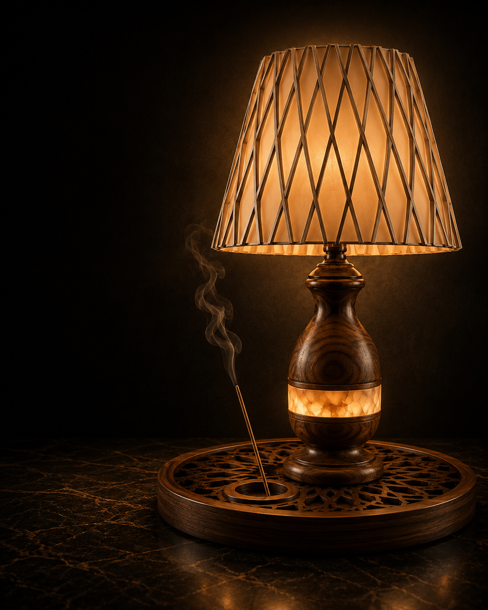

الهام اثر
فرم این آباژور با الهام از هندسه آرامگاه حکیم عمر خیام طراحی شده است. ترکیب چوب گردو، سنگ عقیق و نور گرم، تلاش میکند همان آرامش و تعادل موجود در معماری ایرانی را در فضای زندگی امروز زنده کند.

از اینکه یکی از آثار دستساز VINA را انتخاب کردهاید سپاسگزاریم. این آباژور صرفاً یک وسیله روشنایی نیست. این اثر حاصل ساعتها طراحی، انتخاب متریال، پرداخت جزئیات و الهام از معماری آرامگاه حکیم عمر خیام است.
فرم این آباژور با الهام از هندسه آرامگاه حکیم عمر خیام طراحی شده است. ترکیب چوب گردو، سنگ عقیق و نور گرم، تلاش میکند همان آرامش و تعادل موجود در معماری ایرانی را در فضای زندگی امروز زنده کند.
در نسخه بعدی این صفحه، موارد زیر اضافه خواهد شد.